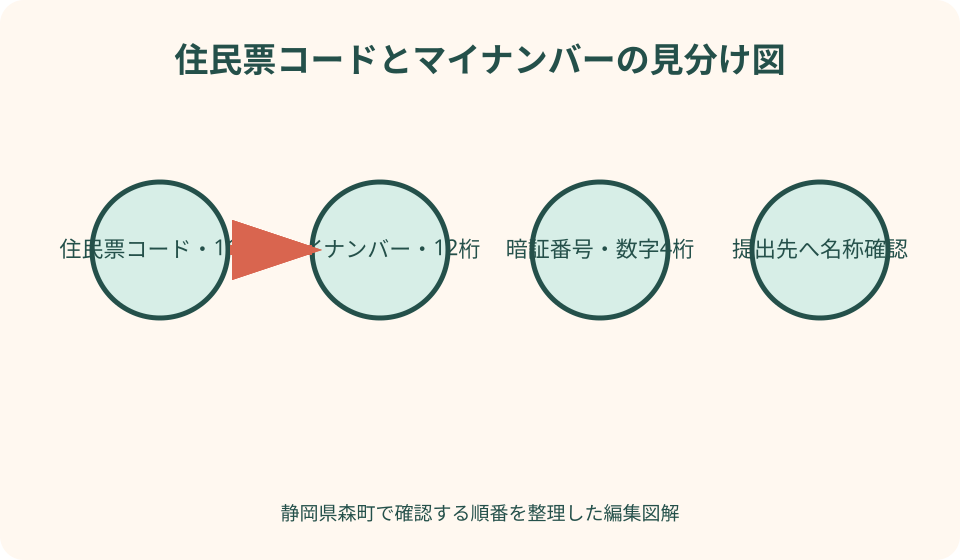
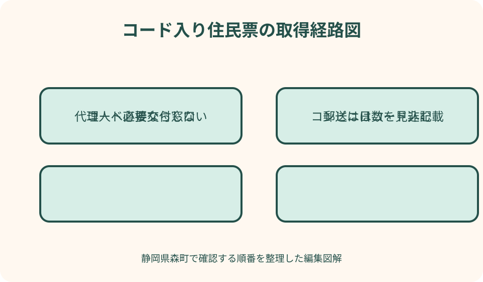

行政手続・証明書｜最終確認 2026-08-10
静岡県森町で住民票コードを確認する｜マイナンバーとの違いと記載入り住民票の請求
住民票コードは、マイナンバー、住民票の整理番号、マイナンバーカードの暗証番号とは別の番号です。森町で住民票の写しを普通に取得しても自動的には印字されず、コンビニ交付の住民票には記載されません。提出先が本当に住民票コードを求めているかを確かめたうえで、窓口または郵送の請求書に記載希望を明示する必要があります。

編集イラスト住民票コードは11桁、マイナンバーは12桁
『住民票の番号を出してください』と言われたとき、最初に提出先へ正式名称を確認します。住民票コードは住民基本台帳ネットワークで本人を識別する11桁の番号です。社会保障・税・災害対策の手続で用いられる12桁のマイナンバーとは、桁数も制度上の用途も異なります。
マイナンバーカード券面の裏側に記載される12桁の個人番号を見て、住民票コード欄へ転記してはいけません。反対に、住民票コードをマイナンバーとして勤務先や税の書類へ書くことも誤りです。提出書類の欄名が曖昧なら、桁数と根拠となる案内を提出先へ尋ねます。
住民票コードは、住所、世帯番号、証明書の発行番号、住民基本台帳カードの番号とも別です。森町が発行する住民票の右上などに管理用番号が印刷されていても、それを住民票コードだと判断しません。『住民票コード』と明示された項目だけを確認します。
番号を知りたいという目的だけなら、手元に昔の住民票コード通知が残っている場合もあります。ただし、提出先が原本の住民票を求めているのか、番号だけの記入でよいのかで準備が変わります。古い通知の写真を送る前に、必要な証明方法を確認してください。
提出先が本当に求める項目を先に聞く
住民票の写しには、氏名、住所、生年月日などの基本事項に加え、世帯主・続柄、本籍・筆頭者、マイナンバー、住民票コードなど、希望や請求理由に応じて記載する項目があります。すべてを載せた方が丁寧とは限りません。提出先が不要な番号まで取得しないことが安全です。
提出先には、『住民票コード11桁の記載が必要ですか』『マイナンバー12桁ではありませんか』『世帯全員分か本人一人分か』『発行からの期間指定はありますか』と分けて聞きます。電話回答なら担当部署、確認日、回答内容をメモし、申請書の提出先欄へ反映します。
年金、資格、行政手続など用途を聞いたものの、案内文に番号名が書かれていない場合は、口頭の記憶で判断しません。提出先の公式チェックリストや申請要領を見せてもらい、住民票コードの記載要否を確定します。森町役場は証明書を発行しますが、提出先の要件を代わりに決める窓口ではありません。
家族分をまとめて求められた場合も、一人ずつ必要性を確認します。世帯全員の住民票を取れば全員の住民票コードが当然に必要とは限りません。本人分だけで足りる手続へ、配偶者や子どもの番号まで提出しないようにします。
森町役場の窓口では記載希望を明示する
森町公式の『住民票の写しの申請』では、役場受付窓口の住民票の写し等請求書へ必要事項を記入し、住民生活課へ提出する方法を案内しています。窓口で『住民票を一通』とだけ伝えるのではなく、『住民票コード記載を希望』と申請書の該当欄で指定します。
森町の窓口用請求書には、世帯主氏名・続柄、本籍・筆頭者氏名、住民票コード、マイナンバーなどを選ぶ欄があります。住民票コードとマイナンバーは別々のチェック欄です。窓口職員が用途を聞いたときは、提出先と必要項目を伝え、不要な欄に印を付けません。
本人または住民登録上の同一世帯員は、住民票の写しを請求できます。同じ住所に住んでいても世帯を分けている人は同一世帯員ではなく、委任状が必要になると森町は案内しています。家族関係や同居だけで請求権を判断せず、住民票上の世帯を基準に確認します。
窓口では請求者の本人確認が行われます。森町公式ページは、顔写真付き書類一点または顔写真のない書類二点という区分を示していますが、書類の有効性や現行の組合せは来庁日に再確認してください。マイナンバーカードを本人確認に使う場合も、裏面の個人番号を不要に複写させないようにします。

コンビニ交付では住民票コードを確認できない
森町はマイナンバーカードを使った証明書コンビニ交付を提供していますが、町公式ページは、コンビニで発行する住民票の写しに住民票コードは記載されないと明記しています。夜間や休日に端末を操作して、記載項目の選択画面を探しても取得できません。
コンビニ交付で必要な数字四桁は、利用者証明用電子証明書の暗証番号です。この四桁を住民票コードだと取り違えないでください。暗証番号を三回連続して誤るとロックされるため、コードを入力するつもりで端末へ番号を試す行動は危険です。
住民票コード入りが必要と分かった時点で、森町役場窓口または郵送請求へ切り替えます。提出期限が翌朝だからといって、コンビニの通常住民票を取得し、手書きでコードを追記することはできません。発行者が証明した記載内容を自分で書き換えないでください。
コンビニ交付は、コード不要の通常住民票を取得する場面では便利です。提出先へ再確認した結果、住所と氏名だけで足りるなら利用候補になります。目的に応じて窓口とコンビニを選び、価格や時間だけで取得方法を決めないことが大切です。
郵送請求は現住所への返送と日数を見込む
森町公式ページでは、住民票の写しを郵送で請求する方法も案内しています。請求書、手数料分の定額小為替、返信用封筒、本人確認書類の写しなどを用意し、必要事項として住民票コードの記載希望を明示します。書類や手数料は発送日に最新案内を確認します。
郵送請求の返送先は現住所とされています。勤務先、実家、提出先へ直接送ってほしいという希望が当然に認められるわけではありません。転居直後で本人確認書類の住所が旧住所のままなら、返送先を証明する追加資料が必要か森町へ先に問い合わせます。
郵便の往復、役場での確認、休日を含めると、窓口のように当日入手できません。提出期限から逆算し、速達等を利用できるか、返信用封筒の切手額、連絡がつく電話番号を確認します。書類不備の連絡へ出られないと交付が遅れるため、日中の連絡先を正確に書きます。
本人確認書類の写しを送る際は、健康保険関係の記号番号などマスキングが必要な情報を森町の案内に従って処理します。マイナンバーカードは表面だけの写しで足りるか確認し、個人番号が印刷された裏面を必要もなく同封しません。
良い点
住民票コードとマイナンバーを分けて確認する良い点は、提出書類の差し戻しを減らせることです。11桁と12桁を見分け、申請書の正式な欄名を確認すれば、別の番号を書いて再提出する手間を避けられます。番号制度を暗記するより、提出先へ名称を復唱する方が実用的です。
森町の請求書には必要項目を選ぶ欄があるため、用途に合う最小限の記載にできます。本籍もマイナンバーも住民票コードも全部載せるのではなく、住民票コードだけを選ぶ判断ができます。個人情報を提出先へ過剰に渡さずに済みます。
窓口、郵送、コンビニの違いを知ると、期限に合う取得計画を立てられます。コード入りは窓口か郵送、コード不要ならコンビニも候補という分岐が明確です。山間部から役場へ向かう負担と、郵送にかかる日数を比較できます。
代理人請求の受取方法を先に知ることにも意味があります。代理人がその場で番号を見る前提ではなく、本人住所へ郵送される仕組みを理解すれば、本人不在や提出期限とのずれを予測できます。家族が番号を口頭で聞き回る状況を避けられます。
注文したい点
注文したいのは、『住民票コード』『マイナンバー』『住民票の番号』が似た言葉で案内され、初めての人には用途差が分かりにくい点です。森町の請求書では別欄になっていますが、ウェブページにも桁数と代表用途を並べた短い比較表があると、誤請求を防ぎやすくなります。
住民票コード入り住民票をコンビニで取れないことは町公式に明記されていますが、証明書を選ぶ前の段階で気付きにくいことがあります。コンビニ交付ページの発行不可項目を目立たせ、窓口・郵送の請求ページへ直接移れる導線があると便利です。
代理人請求では窓口交付せず本人住所へ郵送する重要な扱いが、PDF請求書の注意書きにあります。ウェブ本文にも同じ注意を記載し、必要な返信用封筒や郵送料、本人への到着目安を事前に確認できると、遠方から来る代理人の再訪を減らせます。
提出先側にも、単に『住民票』と伝えるのではなく、コード記載の要否、世帯範囲、本籍等の要否を申請案内へ明示してほしいところです。発行窓口が用途を推測する仕組みではなく、提出先が必要項目を責任を持って示すことで、住民の過剰な情報提出を防げます。
代理人請求では本人住所への郵送を予定する
森町の窓口用請求書には、代理人申請によるマイナンバーまたは住民票コード入りの住民票は、窓口で代理人へ渡さず、本人の住所地へ郵送するとの注意があります。委任状があれば代理人が即日持ち帰れると思わず、本人が受け取る日までを予定に入れます。
委任状には、単なる住民票一通ではなく、住民票コード記載の住民票を請求する意思が分かるように書く必要があるか森町へ確認します。委任者本人が作成し、代理人が内容を付け足さないことが基本です。代理人自身の本人確認書類も準備します。
同一世帯員は一般の住民票請求で委任状を省略できる案内ですが、本人と別世帯の家族は代理人です。同じ家に住んでいても住民登録上の世帯が別なら扱いが変わります。親子、配偶者という関係だけで同一世帯とみなしません。
本人が入院中、施設入所中、長期出張中などで住民票住所の郵便を受け取れない場合は、代理人が請求してから困る前に森町へ相談します。別の返送先が認められると断定せず、本人確認、送付先確認、提出期限を説明し、可能な手段を案内してもらいます。
住民票コードの取扱いを必要最小限にする
住民票コードはマイナンバーと同じ利用制限の仕組みではありませんが、本人を識別する固有番号です。取得した住民票をSNSや家族グループへ写真で送らず、提出先が指定する安全な方法で渡します。番号部分だけ切り取った画像も、再利用される可能性を考えます。
メール添付を求められた場合は、本当に原本不要か、暗号化やアップロード先が公式かを確認します。提出先を名乗る不審なメールへ返信せず、公式サイトの連絡先から照会します。行政機関が電話で番号を読み上げるよう突然求めた場合も、担当部署へかけ直します。
提出後に自宅へ控えを残す場合、家族全員分のコード入り住民票を共用棚へ置き続けないようにします。保存が必要な期間を提出先へ確認し、不要になれば番号が読めない形で処分します。スキャンデータのクラウド同期や端末のごみ箱にも注意します。
番号を忘れるのが不安でも、日常の連絡帳へ転記する必要はありません。再び必要になれば、正式な住民票を請求して確認できます。覚えることより、どこへ請求し、どの項目を指定するかを家族へ共有する方が安全で確実です。

コードが変わる可能性と古い書類の扱い
住民票コードは、住所を森町内で移しただけ、国内で転出入しただけで毎回新しくなる番号ではありません。ただし、本人からの変更請求などにより変更される制度があります。古い通知や過去の住民票が見つかっても、現在のコードを証明する必要があるなら新しい住民票で確認します。
マイナンバーも原則として生涯同じ番号ですが、漏えいのおそれなど一定の場合に変更されることがあります。この性質が似ていても、住民票コードと同じ番号になることはありません。過去書類の11桁と12桁を並べ、どちらが最新かを自分だけで判断しないようにします。
国外転出や死亡により住民票が除かれた人について、現在の住民票と同じ請求ができるとは限りません。除票の保存期間、請求権、記載できる項目を森町へ確認します。相続手続で被相続人の住民票コードが本当に必要かは、提出先へ先に聞きます。
古い住民基本台帳カードを持っていても、その券面から住民票コードを読み取れるとは限りません。カード番号、発行番号、暗証番号を住民票コードとみなさず、正規の証明が必要なら住民票の写しを取得します。使えない古いカードの返納方法も森町へ確認してください。
代案・結論
提出期限が迫っていて役場へ行けない場合は、まず提出先へ住民票コード記載が必須かを再確認します。番号記入だけでよい、後日提出できる、通常の住民票で代替できるという可能性は提出先が判断します。コンビニ住民票へ手書きする方法は選びません。
本人が来庁できない場合は、同一世帯員による請求か、委任状を持つ代理人請求か、郵送請求を比較します。代理人請求では本人住所へ郵送されるため、即日提出の代案にはなりにくい点を考慮します。移動時間と郵便日数のどちらが短いかを判断します。
本人確認書類が不足する場合は、手元の書類名を森町へ伝え、認められる組合せを確認します。マイナンバーカードがなくても請求できないと決めつけず、運転免許証、資格確認書、年金関係書類など現有書類を整理します。無効期限の切れた書類を黙って提出しません。
結論は、提出先へ正式名称を確認し、森町の請求書で住民票コード欄を選び、窓口または郵送で取得することです。コンビニ交付はコード非記載です。11桁と12桁を分け、必要な人の分だけ取得し、代理人なら本人住所への郵送まで予定すれば、差し戻しと過剰提出を減らせます。
大石の視点
大石の視点では、番号を聞かれたときに『念のため全部載せた住民票』を取らないことが大切です。住民票コード、本籍、マイナンバーは、それぞれ用途が違います。提出先へ必要項目を聞き、最小限の証明書を一通取得する方が、費用だけでなく情報管理の負担も小さくなります。
森町では、町なかから役場へ行く人と、三倉・天方など北部から行く人で移動負担が違います。コンビニで取れないと店頭で知ってから役場へ向かうのではなく、コード入りは窓口・郵送という分岐を先に確認します。一回の移動で完了させる準備が地域の実用性につながります。
家族の手続を助けるときも、住民票コードを家族全員で共有する必要はありません。本人が請求書を書く、同一世帯員が窓口へ行く、代理人が委任状を届けるという役割だけを決めます。番号そのものを知ることと手続を支援することを分けます。
取得した証明書は、提出したら終わりではありません。控えの置き場所、写真データ、返信用封筒の宛名、不要後の処分までが一つの手続です。番号を長く保管するより、再度必要になったときの森町公式ページを記録しておく方が安全です。
窓口・郵送・コンビニを選ぶ判断表
当日中に住民票コード入りの原本が必要で、本人または同一世帯員が役場へ行けるなら、森町役場窓口が第一候補です。開庁時間、本人確認書類、手数料を当日に確認し、提出先名を請求書へ書けるよう準備します。窓口混雑も見込み、終了間際を避けます。
数日の余裕があり、本人が森町役場へ行けないなら郵送請求を検討します。請求書へコード記載希望を明記し、定額小為替、返信用封筒、本人確認書類の写しをそろえます。発送日と追跡番号、森町から連絡が来た場合の対応者を決めます。
住民票コードが不要で、本人または同一世帯員の通常住民票が必要なら、コンビニ交付が候補です。マイナンバーカード、利用者証明用暗証番号、対象年齢、サービス停止情報を確認します。コードを後から追加できないため、提出要件の確認を先に終えます。
代理人しか動けない場合は、委任状で請求できてもコード入り住民票が本人住所へ郵送される点を計画へ入れます。代理人が提出先へ直接持っていく目的には合わないことがあります。本人の郵便受取、代理人への引渡し、提出期限の三段階を逆算します。
請求前と受取後の最終チェック
請求前は、必要なのが住民票コード11桁か、マイナンバー12桁かを提出先へ確認します。本人一人分か世帯全員分か、世帯主・続柄、本籍、国籍・在留情報など他の項目が必要かも聞きます。回答日と担当部署をメモします。
森町の請求書では、証明書の種類、通数、必要な表示、提出先、使いみちを記入します。住民票コード欄とマイナンバー欄を見比べ、目的の方だけを選びます。訂正方法が分からないときは二重線や修正液で自己処理せず、窓口へ確認します。
受取後は、氏名、住所、対象者、住民票コードの記載、発行日をその場で確認します。番号が11桁かを見るだけでなく、提出先が指定する世帯範囲と他の項目を満たすか照合します。不足に気付いたら、自分で書き足さず再請求の要否を森町へ相談します。
提出時は、提出先の正式な窓口へ原本または指定されたデータを渡します。残った封筒、申請メモ、コピーには住民票コードが含まれる可能性があります。保管の必要性を確認し、不要なものは読めない形で処分して一連の確認を終えます。
公式情報・確認先
掲載内容は次の一次情報を基礎に整理しました。営業、料金、催し、交通は変わるため、出発前または手続き前にリンク先で最新情報を確認してください。
- 住民票の写しの申請（静岡県森町、2026-08-10確認）
- 住民票の写し等請求書（窓口用）（静岡県森町、2026-08-10確認）
- 証明書のコンビニ交付サービスについて（静岡県森町、2026-08-10確認）
- 住民基本台帳法（e-Gov法令検索、2026-08-10確認）
- マイナンバー（個人番号）とは（地方公共団体情報システム機構（マイナンバーカード総合サイト）、2026-08-10確認）